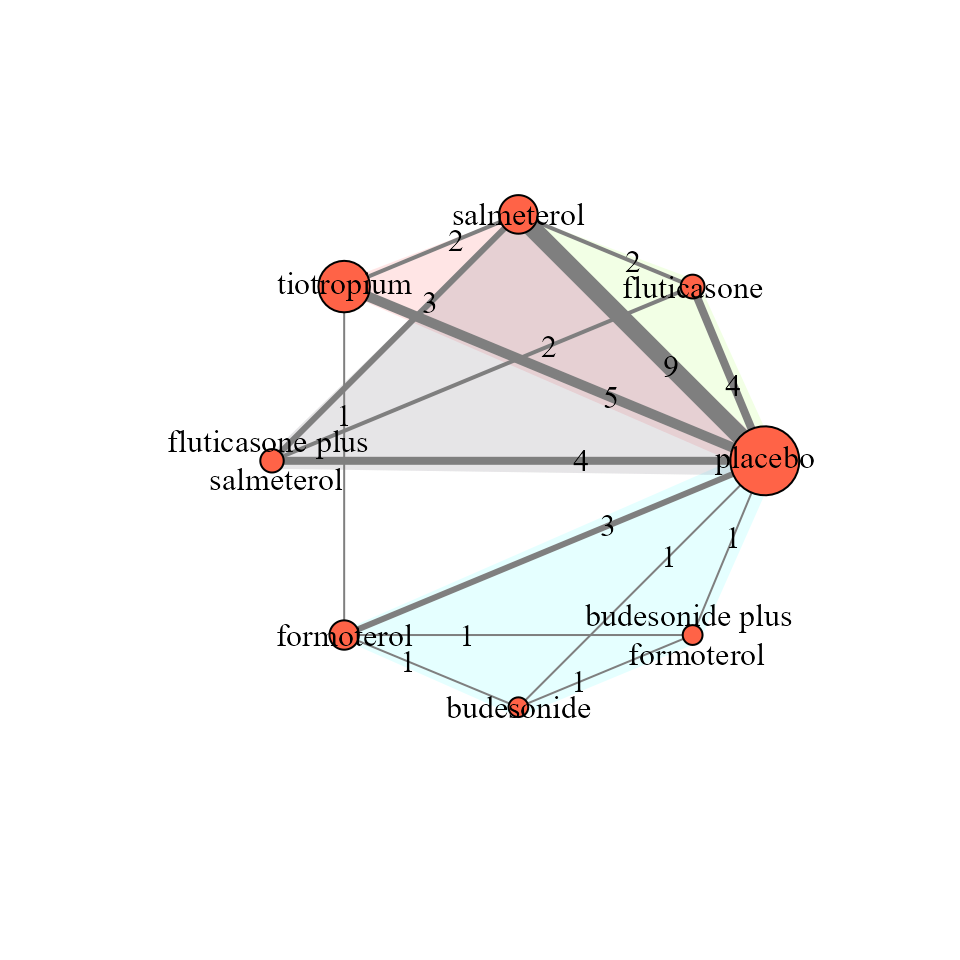

perform_network_metaanalysis.RmdThis vignette illustrates how to perform a one-stage Bayesian random-effects network meta-analysis with consistency equation using the run_model function. This function includes arguments to handle aggregate missing participant outcome data (MOD) in each arm of every trial via the pattern-mixture model.
We will use the network on pharmacologic interventions for chronic obstructive pulmonary disease (COPD) from the systematic review of Baker et al. (2009). This network comprises 21 trials comparing seven pharmacological interventions with each other and placebo. The exacerbation of COPD (harmful outcome) is the analysed binary outcome (see ?nma.baker2009).

run_model calls the jags function from the R2jags package to perform the Bayesian analysis using the BUGS code of Dias and colleagues (2013). With only the minimum required arguments, the function adjusts MOD under the missing-at-random assumption (MAR; by default) via the informative missingness odds ratio (IMOR) in the logarithmic scale (White et al. (2008)):
run_model(data = nma.baker2009,
measure = "OR",
heter_prior = list("halfnormal", 0, 1),
D = 0,
n_chains = 3,
n_iter = 10000,
n_burnin = 1000,
n_thin = 1)The minimum required arguments of run_model include specifying:
data (see ?data_preparation);measure (see ‘Arguments’ in ?run_model):heter_prior (see ?heterogeneity_param_prior);D (here, D = 0 because the outcome is harmful; see, ‘Arguments’ in ?run_model)n_chains (see ‘Arguments’ in ?run_model – also for the subsequent arguments);n_iter;n_burnin, andn_thin.Suppose we decide to use an empirically-based prior distribution for the between-trial variance that aligns with the outcome and interventions under investigation. We also consider a hierarchical structure for the prior normal distribution of the log IMOR that is specific to the interventions in the network (assumption = "HIE-ARM") (Turner et al., 2015a; Spineli, 2019). We still assume MAR on average with variance of log IMOR equal to 1 (var_misspar = 1) which is also the default argument. In this case, run_model must be specified as follows:
run_model(data = nma.baker2009,
measure = "OR",
model = "RE",
assumption = "HIE-ARM",
heter_prior = list("lognormal", -2.06, 0.438),
mean_misspar = c(0, 0),
var_misspar = 1,
D = 0,
n_chains = 3,
n_iter = 10000,
n_burnin = 1000,
n_thin = 1)The argument model = "RE" refers to the random-effects model. For the fixed-effect model, use model = "FE".
heter_prior = list("lognormal", -2.06, 0.438) refers to ‘symptoms reflecting the continuation of condition’ for the ‘pharmacological versus placebo’ comparison-type as elicited by Turner and colleagues (2015b).
In the argument mean_misspar = c(0, 0), the first and second element of the vector refers to the mean log IMOR in the non-reference interventions and the reference intervention of the network, respectively – the latter is always the intervention with identifier equal to 1. Hence, for all non-reference interventions we can consider the same mean log IMOR. See ‘Details’ in ?missingness_param_prior
run_model returns a list of R2jags output on the summaries of the posterior distribution, and the Gelman-Rubin convergence diagnostic of the monitored parameters (see ‘Value’ in ?run_model). The output is used as an S3 object by other functions of the package to be processed further and provide an end-user-ready output. See, for example, the function ?league_heatmap that creates the league table with the effect sizes of all possible comparisons in the network.
For instance, the output below presents the posterior distribution of the log odds ratio of comparisons with placebo, the reference intervention of the network.
mean sd 2.5% 25% 50% 75% 97.5% Rhat n.eff
EM.ref[2] -0.93480823 0.5185140 -1.9164531 -1.2907242 -0.94989451 -0.59282550 0.12035587 1.001578 3200
EM.ref[3] -0.73083646 0.4569009 -1.6179873 -1.0432991 -0.73596570 -0.43020048 0.19926151 1.002955 1100
EM.ref[4] -0.31983132 0.3089103 -0.9070811 -0.5299740 -0.32429292 -0.11605587 0.30595718 1.002566 3500
EM.ref[5] -0.49259722 0.2963043 -1.0573816 -0.6962175 -0.49502556 -0.28842305 0.07677987 1.008248 500
EM.ref[6] -0.09399703 0.2733858 -0.6463486 -0.2786162 -0.08705503 0.09585867 0.41004105 1.003300 1400
EM.ref[7] -0.48543199 0.1769247 -0.8453436 -0.6017106 -0.48296484 -0.36559844 -0.14759800 1.004266 6900
EM.ref[8] -0.54030217 0.1627166 -0.8696695 -0.6434582 -0.53674885 -0.43067209 -0.23068815 1.006492 1800run_model can also handle a dataset where MOD have not be extracted or MOD have been extracted for some trials or trial-arms. For illustrative purposes, we removed the item m from nma.baker2009 to indicate that MOD were not extracted for this outcome:
study t1 t2 t3 t4 r1 r2 r3 r4 n1 n2 n3 n4
1 Llewellyn-Jones, 1996 1 4 NA NA 3 0 NA NA 8 8 NA NA
2 Paggiaro, 1998 1 4 NA NA 51 45 NA NA 139 142 NA NA
3 Mahler, 1999 1 7 NA NA 47 28 NA NA 143 135 NA NA
4 Casaburi, 2000 1 8 NA NA 41 45 NA NA 191 279 NA NA
5 van Noord, 2000 1 7 NA NA 18 11 NA NA 50 47 NA NA
6 Rennard, 2001 1 7 NA NA 41 38 NA NA 135 132 NA NA
7 Casaburi, 2002 1 8 NA NA 156 198 NA NA 371 550 NA NA
8 Chapman, 2002 1 7 NA NA 68 52 NA NA 207 201 NA NA
9 Donohue, 2002 1 7 8 NA 92 82 77 NA 201 213 209 NA
10 Mahler, 2002 1 4 7 5 79 77 63 68 181 168 160 165
11 Rossi, 2002 1 6 NA NA 75 117 NA NA 220 425 NA NA
12 Hanania, 2003 1 4 7 5 73 79 65 71 185 183 177 178
13 Szafranski, 2003 1 2 6 3 53 26 38 35 205 198 201 208
14 Briggs, 2005 8 7 NA NA 30 36 NA NA 328 325 NA NA
15 Campbell, 2005 1 6 NA NA 34 35 NA NA 217 215 NA NA
16 Niewoehner, 2005 1 8 NA NA 296 255 NA NA 915 914 NA NA
17 van Noord, 2005 8 6 NA NA 4 14 NA NA 70 69 NA NA
18 Barnes, 2006 1 5 NA NA 24 11 NA NA 73 67 NA NA
19 O’Donnell, 2006 1 7 5 NA 6 1 2 NA 64 59 62 NA
20 Baumgartner, 2007 1 7 NA NA 24 20 NA NA 143 144 NA NA
21 Freeman, 2007 1 8 NA NA 35 19 NA NA 195 200 NA NAUsing the minimum required arguments, run_model will run and provide results. For instance, for the log odds ratio of comparisons with placebo:
#> Missing participant outcome data have *not* been collected mean sd 2.5% 25% 50% 75% 97.5% Rhat n.eff
EM.ref[2] -0.73324703 0.28564994 -1.3037911 -0.9242062 -0.73093354 -0.53887081 -0.18285806 1.001354 4900
EM.ref[3] -0.43450782 0.26207217 -0.9557881 -0.6055543 -0.43443979 -0.26250275 0.07871676 1.002414 1400
EM.ref[4] -0.08081917 0.14634927 -0.3716618 -0.1779293 -0.07815379 0.01803087 0.20306893 1.000997 27000
EM.ref[5] -0.25772784 0.15426919 -0.5707602 -0.3576888 -0.25506383 -0.15383367 0.03680324 1.000943 27000
EM.ref[6] -0.15545243 0.14882405 -0.4431852 -0.2548800 -0.15785022 -0.05810700 0.14402550 1.001313 5400
EM.ref[7] -0.31317285 0.09597481 -0.5080614 -0.3757533 -0.31139876 -0.24857699 -0.12875980 1.002411 1400
EM.ref[8] -0.37176661 0.09957350 -0.5838125 -0.4329816 -0.36711483 -0.30587560 -0.18686050 1.001407 4300run_model calls the data_preparation function. The latter creates a pseudo-data-frame for the item m (see ‘Value’ in ?data_preparation) that assigns NA to all trial-arms. data_preparation also creates the pseudo-data-frame I that has the same dimension with the other items in the dataset, and assigns the zero value to all trial-arms to indicate that no MOD have been extracted. Both pseudo-data-frames aim to retain in the dataset the trials without information on MOD; otherwise, these trials would have been excluded from the analysis. See ‘Details’ in ?data_preparation and ?run_model.
Dias S, Sutton AJ, Ades AE, Welton NJ. Evidence synthesis for decision making 2: a generalized linear modeling framework for pairwise and network meta-analysis of randomized controlled trials. Med Decis Making 2013;33(5):607–617. doi: 10.1177/0272989X12458724
White IR, Higgins JP, Wood AM. Allowing for uncertainty due to missing data in meta-analysis–part 1: two-stage methods. Stat Med 2008;27(5):711–27. doi: 10.1002/sim.3008
Turner NL, Dias S, Ades AE, Welton NJ. A Bayesian framework to account for uncertainty due to missing binary outcome data in pairwise meta-analysis. Stat Med 2015a;34(12):2062–80. doi: 10.1002/sim.6475
Spineli LM. An empirical comparison of Bayesian modelling strategies for missing binary outcome data in network meta- analysis. BMC Med Res Methodol 2019;19(1):86. doi: 10.1186/s12874-019-0731-y
Turner RM, Jackson D, Wei Y, Thompson SG, Higgins JPT. Predictive distributions for between-study heterogeneity and simple methods for their application in Bayesian meta-analysis. Stat Med 2015b;34(6):984–98. doi: 10.1002/sim.6381